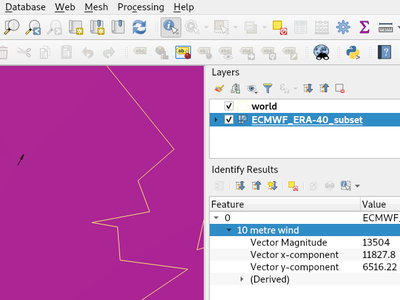
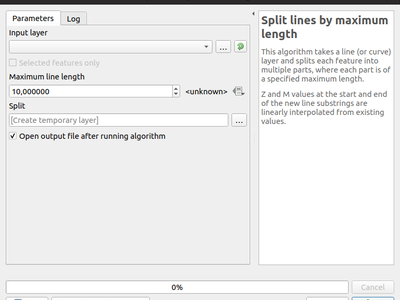
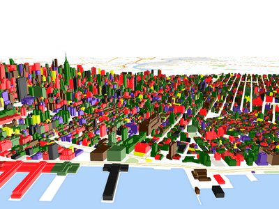

QGIS 3.6 の変更履歴¶

今までで最も偉大なQGISリリースです! QGIS3.6では新しい変更点の莫大なリストがあります-そのハイライトについてはここで解説します。 QGISはオープンソースプロジェクトです。可能であれば、寄付、スポンサーシップ、またはコードドキュメントへの寄付、Webサイトなどを通じて私たちの仕事を支援することを検討してください。
ありがとうございます
私たちは開発者、文書作成者、テスタ等時間や労力を提供してくれる多くのボランティア（また資金を提供してくれる人々）に感謝します。QGISコミュニティとしてはあなたにこのリリースを楽しんでほしいです!あなたが時間やお金を寄付したい場合やQGISをもっと素晴らしいものにすることに参加したい場合は qgie.org を見て回って手を貸して下さい!
QGISは寄付者やスポンサーの支援を受けています。プロジェクトに多額の資金拠出を行った寄付者の現在のリストは寄付者リストをご覧ください。公式プロジェクトスポンサーになりたい場合、詳細はスポンサーシップのページをご覧ください。QGISへの出資は、半年毎の開発者会議に資金提供したり、プロジェクトインフラストラクチャを維持したり、バグ修正の取り組みに資金提供するのに役立ちます。現在のスポンサーの完全なリストは以下に掲載します。すべてのスポンサーの皆様に大変感謝しております！
QGISはフリーのソフトウェアです。利用に金銭的な負担義務はありません。わたしたちはユーザの財政状況や社会的地位にかかわらずより多くの人にQGISを利用して欲しいと思っています。権力をもつ人々が地理空間的な意思決定のツールを持つことで、人類にとってより良い未来をもたらすと信じています。
- マップツール
- 計算式
- ユーザーインターフェース
- シンボロジー
- デジタイズ
- データ管理
- フォームとウィジェット
- マップコンポーザ
- 分析ツール
- プロセッシング
- 機能：新しいアルゴリズム”属性にもとづく重複の削除”
- 機能: HStore分割アルゴリズム
- 機能: 右手ルールの強制
- 機能: バイナリフィールド抽出アルゴリズム
- 機能: 最大長による線分割アルゴリズム
- 機能: 認証設定用の新パラメータ型
- 機能: gdaladdoアルゴリズムにおけるリサンプリングとフォーマットのオプション
- 機能: ラスタのゾーン統計アルゴリズム
- 機能: Z値とM値の抽出アルゴリズム
- 機能: 180度子午線での測地線分割
- 機能: 「ラインの結合 (ラインのハブ)」 の測地線モードアルゴリズム
- Feature: Raster Surface Volume algorithm
- Feature: Resurrected model to Python script functionality
- Application and Project Options
- Browser
- 一般
- Data Providers
- Feature: Open service info for ArcGIS Feature Server layers
- Feature: Binary blob support for OGR providers
- Feature: ArcGIS Feature Server picture marker and picture fill support
- Feature: ArcGIS Feature Server labeling support
- Feature: Boolean and binary field support for memory layers
- Feature: JSON Support for GeoPackage
- Feature: Postgres provider: save primary key selection
- Feature: ArcGIS Feature Server multi-field unique value support
- QGIS Server
- プラグイン
- Programmability
- Feature: New class QgsExifTools
- 機能: QgsGeometryの単一パートに対する反復
- 機能: QgsLineString PyQGIS APIの機能向上
- Feature: PyQGIS Geometry Collection API improvements
- Feature: Easier Processing algorithm creation via @alg decorator
- Feature: Blocking (non-async) network requests
- Feature: Custom validity checks on layout exports
- Feature: API for calculating Geodesic lines
- Feature: New class QgsQuadrilateral
- 3D Features
- Notable Fixes
- Feature: Bug fixes by Alessandro Pasotti
- Feature: Bug fixes by Alexander Bruy
- Feature: Bug fixes by Jürgen Fischer
- Feature: Bug fixes by Peter Petrik
- Feature: Bug fixes by Julien Cabieces
- Feature: Bug fixes by Loïc Bartoletti
- Feature: Bug fixes by Victor Olaya
- Feature: Bug fixes by Even Rouault
- Feature: Bug fixes by Martin Dobias
- Feature: Bug fixes by Nyall Dawson
- Feature: Bug fixes by Hugo Mercier
マップツール¶
タイトルラベルの装飾¶
新しい装飾機能ではマップキャンバス自体にタイトルを追加することができます。装飾機能では背景の色と透過度を設定できます。

この機能は Mathieu Pellerin によって開発されました。
機能: 装飾アイテムの上部/下部での中央揃え¶
マップキャンバスの著作権表示と今回新規に追加されたタイトルラベルについて、マップの上部または下部の中央に配置することができます。
この機能は Mathieu Pellerin によって開発されました。
機能: ノードツールの修正と改善¶
注：下記の項目はすべてLTRにバックポートされているため、QGIS 3.4.5にも反映されます。
編集前のロックされた地物の選択¶
QGIS 2.18では、編集する前に常に最初に地物を選択しなければなりませんでした。QGIS 3ではそのようなことはありません - いつでもどんな地物でも編集できます。今、地物の選択（ 「ロック」）を再び利用可能にしています - **右クリック**を使用して。
以前のQGIS 3バージョンでは、地物を右クリックすると小さなポップアップメニューが表示され、頂点エディタが表示されました。 今は、地物を右クリックするとすぐに頂点エディタが表示され、他の地物の編集は無効になります。
地物が「ロック」されているときは、それをクリックするか空の領域をクリックすることで再びロック解除できます。複数の地物を編集できる場合はデフォルトモードに戻ります。
1つのマウス位置に複数の地物がある場合は、右クリックを繰り返すとそれらがループします - 右クリックするたびに、異なる地物にロックされます。最後に、すべての地物が提供されると、地物はロックされず、さらに右クリックするとループが再開されます。
地物の頂点、縁、または内部（ポリゴン）をクリックすると、ロックが可能になります。
既存の地物に新しい頂点を追加¶
新しい位置に配置せずに新しい頂点を追加するために Shift +ダブルクリックを使用することが可能になりました 。ユーザーが既存のセグメントに追加の頂点を追加したいときに、これは便利なことがあります。
「現在のレイヤー」モードがデフォルトになりました。¶
頂点ツールの2つのモードから、「すべてのレイヤー」がデフォルトになっていました。しかし、ユーザーフィードバックから、それはあまり一般的ではないように思われ、ユーザーはデフォルトとして「現在のレイヤー」を使用することを好みます。
この機能は German QGIS user group の資金提供により開発されました。
この機能は Martin Dobias（Lutra Consulting） によって開発されました。
機能: トリム/エクステンド¶
多くのソフトウェアとは異なり、このツールを使用すると、（マルチ）ラインと（マルチ）ポリゴンを変更できます。さらに、必ずしも関係するラインの端である必要はなく、ジオメトリの任意のセグメントを修正できます。反面、これは無効なジオメトリにつながる可能性があり、それはユーザーの責任です。
このツールでは、他のセグメントを延長またはトリミングする制限（セグメント）を選択するように求めてきます。ノードツールとは異なり、チェックはそのレイヤーが編集されていることだけを修正するため行われます。
両方のセグメントが3Dの場合、ツールはZを返すためにリミットセグメントに対して内挿を実行します。
トリムの場合は、クリックして短くする部分を選択する必要があります。
この機能は Mairie deMegève によって資金提供されました
この機能は LoïcBartoletti（Oslandia） によって開発されました。
機能:3点からの長方形作成(投影されたデータ)¶
四角形を最初の点と二番目の点の間の長さとし、二番目の長さは三番目と二番目の点の間の距離に等しい3点で四角形を作る方法はすでにあります。
この新しい方法では、3点で長方形を作成できます。2番目の長さは、点と線分（またはその延長線）に垂直に投影された点の間の距離です。
この機能は LoïcBartoletti（Oslandia） によって開発されました。
機能: メッシュレイヤの識別ツール¶
識別ツールがメッシュレイヤで機能するようになりました。現在の時刻におけるメッシュのスカラ成分とベクタ成分の値を表示します。

この機能はLutra Consultingによって資金提供されました。
この機能は Peter Petrik (Lutra Consulting) によって開発されました。
計算式¶
機能: 新しい関数¶
force_rhr：ポリゴンに右手の法則に従うように強制します。この規則では、ポリゴンで囲まれた領域は境界の右側にあります。特に、外側リングは時計回り方向に、内側リングは反時計回り方向に配向されている。decode_uri：layerパラメータとオプションのuri partパラメータを取ります。レイヤーのデータソースに関する詳細を返します。利用可能な詳細はデータプロバイダによって異なります。layerパラメータだけで呼び出された場合は、利用可能なすべての情報とともに地図が返されます。部分も指定されている場合は、要求された部分の値だけが地図から抽出されます。pathはlayer_propertyのオプションとして追加されました。array_sort：要素の配列をソートしますnullif- sqlite_fetch_and_increment
make_rectangle_3points：3点から矩形を作ります 長方形を距離または射影で作成する方法は2つあります。オプション距離：2番目の距離は2番目と3番目の点の間の距離と同じです。投影されたオプション：2番目の距離は、セグメント上の3番目の点の垂直投影またはその延長の距離に等しくなります。make_square：対角線から正方形を作ります。- from_json
- to_json
機能: マップ配列の要素へのアクセスを簡単にするための角括弧¶
次の式が使用できるようになります。
- array(1,2,3)[0] -> 1
- array(1,2,3)[2] -> 3
- array(1,2,3)[-1] -> 3 (Pythonの形式です。インデックス値が負なら配列の末尾から数えます)
- array(1,2,3)[-3] -> 1
- map(『a』,1,』b』,2)[『a』] -> 1
- map(『a』,1,』b』,2)[『b』] -> 2
本機能はNyall Dawson, Mathieu Pellerinが開発しました。
機能: 新しいマップ式変数¶
- @map_crs_description: 地図の座標参照系の名前.
- @map_crs_acronym: 地図の座標参照系の頭字語.
- @map_ellipsoid_acr: 地図の座標参照系の楕円体の頭字語.
- @map_crs_proj4: 座標参照系のProj4定義.
- @map_crs_wkt: WKTの座標参照系定義
この機能は Alexis Roy-Lizotte によって開発されました。
機能: エラーを検出する新しい try() 関数¶
新しいtry()関数は式を試し、エラーがなければその値を返します。式がエラーを返す場合は、指定されているときは代替値が返されます。それ以外の場合にはこの関数はnullを返します。
この機能は Mathieu Pellerin によって開発されました。
ユーザーインターフェース¶
機能: グレースケールの新テーマ: 「Blend of Gray」¶
新しいUIテーマは 「Blend of Gray」 と名付けられました。加えて既存のUIテーマ 「Night Mapping」 にも多くの修正、微調整、改善が施されました。

この機能は Mathieu Pellerin によって開発されました。
機能: コードエディター/フィールド計算機における複数行の選択と編集¶
QGISのフィールド計算機とPythonスクリプトエディターで、ctlキーを押したままテキストの複数行ブロックを選択し、同時に編集することができます。
この機能は Nyall Dawson () によって開発されました。
シンボロジー¶
機能: .XMLスタイルライブラリの取り扱い方法の改善¶
ブラウザパネルにQGISスタイルのxmlライブラリが表示され、これらのファイルをQGISウィンドウにドラッグアンドドロップすることもできます。これにより、ユーザーがスタイルライブラリを閲覧したり、ライブラリからQGISインストールにスタイルをインポートしたりできるダイアログが開きます。
この機能は North Road の資金提供によって開発されました。
この機能は、 Nyall Dawson (North Road) によって開発されました
機能: ポリゴンシンボルへの右手の法則の適用¶
塗りつぶしシンボルの[詳細設定]ボタンの下にあるこの新しいオプションを使用すると、レンダリングされたポリゴンをリングの向きに関する標準の 「右手の法則」 に従うことができます。
向きの修正はレンダリング中にのみ適用され、元の地物ジオメトリは変更されません。
これにより、レンダリングされるデータセットや個々の地物のリングの向きにかかわらず、一貫した外観の塗りつぶしシンボルを作成できます。
この機能は、QGIS User Group Germanyの資金提供によって開発されました。
この機能は Nyall Dawson (North Road) により開発されました。
機能: 外周の内側または外側のみシンプルラインまたはマーカーラインの塗りつぶオプション¶
この新しいオプションは、単純なラインシンボルまたはマーカーラインシンボルがポリゴンをレンダリングするための塗りつぶしシンボルの一部として使用されているときはいつでも表示されます。デフォルトの動作では、内輪と外輪の両方がレンダリングされますが、この新しい設定では、シンボルレイヤを外輪のみまたは内輪のみにレンダリングするように設定できます。これにより、以前は直接不可能だったシンボル化が可能になります。たとえば、ポリゴンの内側に向かって傾斜した内側のリングのマーカーを含むマーカーラインです。
この機能は、QGIS User Group Germanyの資金提供によって開発されました。
この機能は Nyall Dawson (North Road) により開発されました。
機能: ラスターイメージマーカー¶
新しいラスターイメージマーカーシンボルタイプがQGISに追加され、ユーザーはラスター、つまりビットマップイメージファイルを使用してマーカーとして表示できます。ラスターイメージマーカーシンボルにより、幅、高さ、イメージ比、回転、および不透明度をカスタマイズできます。
データ定義の画像ソースを使用することで、この新しいシンボルは、地理参照画像を地図キャンバスに表示するための優れた方法になります。

この機能は Mathieu Pellerin によって開発されました。
機能：ラスター塗りつぶしでリモートURLまたは埋め込み画像に画像を設定できます¶
SVGやラスタ画像マーカーと同様に、ラスタ塗りつぶしはHTTPのURLを使用するように設定したり、ファイルをシンボル自体の内部に直接埋め込むことができます。
この機能は マシュー・ペレリン によって開発されました
分類されたレンダリングでの代表値の使用¶
フィールドが値リレーション、値マップ、またはその他の「表現可能な値」で構成されていて、フィールドが分類レンダラーのソースとして使用されている場合、表現された値はカテゴリのラベル付けに使用されます。
この機能はMatthias Kuhnによって開発されました
機能: 分類レンダラでカテゴリをマージするオプション¶
この変更により、ユーザーは既存の複数のカテゴリーを選択し、それらを単一のカテゴリーにグループ化できます。これは、選択からの任意の値に適用されます。
これにより、多数のカテゴリを持つレイヤをより簡単にスタイル設定できます。この場合、多数の異なるカテゴリを複数の値に適用される、より小さく、管理しやすいカテゴリにまとめることができます。
このオプションは、複数のカテゴリが選択されているときはいつでも、カテゴリリストビューの右クリックコンテキストメニューから利用できます。

この機能は SMEC/SJ によって資金提供されました
この機能は、 Nyall Dawson (North Road) によって開発されました
機能:¶
これにより、色の値にリンクされているデータ定義ボタンに新しい「プロジェクトカラー」セクションが追加されます。カラーメニューには、現在のプロジェクトのプロジェクトカラースキーム（プロジェクトプロパティで定義されています）の一部として定義されているすべての色が含まれています。
ボタンからプロジェクトの色を選択すると、プロパティはその色にリンクされます。プロジェクトのプロパティを介して行われると、それは自動的に将来の色の変更に従います。
これにより、ユーザーはプロジェクトの共通色を一度定義してから、シンボル、ラベル、レイアウトなどの色をこれらのプリセット色に「バインド」することができます。リンクは有効なので、一度変更すると、その変更はどこにでも反映されます。使用時に色を100回更新することは、プロジェクトのシンボル、ラベルなどに散らばっています。
この機能は North Road の資金提供によって開発されました。
この機能は、 Nyall Dawson (North Road) によって開発されました
機能: スタイルマネージャーダイアログの改善¶
スタイルマネージャーダイアログでは多くの改善が施されました。
- 新しいリストビューモードの追加
- 「全選択」のタブが追加され、合致するシンボル全てを表示することができるようになりました（ただしシンボルタイプを除く）
この機能は、 Nyall Dawson (North Road) によって開発されました
機能: ラスタースタイルのSLDエクスポート¶
QGISでは新規にラスターのスタイルをSLDにエクスポートすることが可能になりました。Geoseverでこの機能が使われている例はこちらです。https://docs.geoserver.org/latest/en/user/styling/qgis/index.html#exporting-raster-symbology

この機能はOSGeo UK, GeoServer PSC, Brad Hardsの資金提供を受けています。
この機能は `Luigi Pirelli and GeoSolutions <https://www.geo-solutions.it/>`__によって開発されました。
デジタイズ¶
機能: ジオリファレンサの機能強化¶
- GCPポイントにdX, dYと残差を追加
- GCPポイントをラスタ修正パスに自動的に保存するオプションを追加

本機能は Faneva Andriamiadantsoa によって開発されました。
機能: ポイント追加の時にジオリファレンサが最小化するのを避ける新しいオプション¶
ユーザは、マップキャンバスから新しいコントロールポイントを追加するときに発生する自動ジオリファレンスウィンドウの最小化を避けることができます。この動作は、ポイントを追加しながら両方のウィンドウを表示させることが望ましい場合があるマルチモニタ設定では厄介です。
この機能は、 Nyall Dawson (North Road) によって開発されました
データ管理¶
機能: データベースマネージャのコメントオプション¶
この機能は Corentin Falcone (SIRS) によって開発されました
フォームとウィジェット¶
機能: バイナリ (BLOB) フィールドの新しいフォームウィジェット¶
このウィジェットはバイナリフィールドでのみ利用可能です（そしてこれはバイナリフィールドに使用されるデフォルトウィジェットです）。BLOBフィールドが空かどうかを示すラベルを表示し、空でない場合はコンテンツサイズ（バイト/ kb / etc単位）を示します。
ドロップダウンメニューボタンを使用すると、ユーザーはフィールドの現在のバイナリコンテンツをディスクベースのファイルに保存したり、BLOBフィールドのコンテンツを消去したり、システムからファイルを選択してバイナリコンテンツを埋め込むことができます。
この機能は SMEC/SJ によって資金提供されました
この機能は、 Nyall Dawson (North Road) によって開発されました
マップコンポーザ¶
機能: グリッドフレームの改善¶
ユーザがレイアウト地図アイテムのグリッド枠に余白を設定できるようになりました。さらに、新しい 「Zebra（Nautical）」 および 「Line border（Nautical）」 フレームスタイルが追加されました。これらは、グリッドに余白が設定されている場合に、グリッドコーナーに航海スタイルのブロックを表示します。
この機能はkonstによって開発されました
機能: 文字とラベルのエクスポート処理の改善¶
印刷レイアウトをPDFまたはSVG形式にエクスポートするときに、そのレイアウト内のテキストとラベルをどのようにエクスポートするかをユーザーが選択できるようになりました。使用可能なオプションは、すべてのテキストをアウトライン/曲線に変換するか（以前のデフォルト）、テキストとラベルをテキストオブジェクトのままにすることです。
この機能は、 Nyall Dawson (North Road) によって開発されました
機能: マップのラベル機能の改善¶
レイアウト地図項目内のラベルのレンダリング方法に関して、いくつかの改善が行われました。
- 新しい設定により、地図ごとに、ラベルを地図アイテムの端に配置することを許可する方法を制御できます。サイズはmm/インチ/ピクセルなどを使用して設定でき、データで定義されたラベルの余白が許可されます。
- 新しい設定により、部分ラベルをマップに表示するかどうかをマップごとに制御できます。レイアウトは常に最高品質のカートグラフィック出力を生成する設定にする必要があるため、これはデフォルトではオフになります（新しいプロジェクトではデフォルトでtrueになるキャンバス設定とは異なります）。
この機能は North Road の資金提供によって開発されました。
この機能は、 Nyall Dawson (North Road) によって開発されました
機能: 地図アイテムの範囲/縮尺のショートカットの改訂¶
現在の地図ビューと一致するようにレイアウト地図アイテムを設定するためのボタン（およびその逆）が、地図アイテムプロパティウィンドウの新しいツールバーに移動されました。
地図アイテムの縮尺をメインのキャンバスの縮尺に合わせたり、選択したレイアウト地図の縮尺に合わせてメインのキャンバスの縮尺を設定したりするための新しいアクションも追加されました。これらは、キャンバスから範囲を設定し、その範囲をキャンバスにプッシュするための既存の設定を反映しています。
この機能は North Road の資金提供によって開発されました。
この機能は、 Nyall Dawson (North Road) によって開発されました
機能: 地図ラベルの描画をブロックするレイアウトアイテムの指定¶
この機能により、他のレイアウトアイテム（スケールバー、北向きの矢印、差し込み地図など）を、地図アイテム内の地図ラベルの「ブロッカー」としてマークすることができます。これにより、地図ラベルがそれらの項目の下に配置されるのを防ぎます - ラベリングエンジンはこれらのラベルの代わりの配置を試みます（またはそれらを完全に破棄します）。
これにより、地図上より心地よい地図を作成できます。ラベルを他の項目の下に配置すると読みにくくなりますが、この新しい設定がないと、QGISがこれらの隠れた領域にラベルを配置しないようにできます。
ブロックするアイテムは、ラベル設定パネルの下にある地図アイテムのプロパティで設定します。設定はマップごとの項目なので、スケールバーを使用して、レイアウト内の1つの地図のラベルをブロックし、他の地図のラベルをブロックしないようにすることができます（必要に応じて）。
この機能は North Road の資金提供によって開発されました。
この機能は、 Nyall Dawson (North Road) によって開発されました
機能: エクスポートでの警告¶
印刷レイアウトをエクスポートするとき、QGISは自動的に一般的な間違いがないかどうかレイアウトをチェックし、見つかったときにユーザーに警告します。
- 地図アイテムにリンクされていないスケールバー
- パスが壊れているか見つからない、または判読できない画像ファイルにリンクされている画像アイテム
- 地図の概要が有効な地図アイテムにリンクされなくなりました
この機能は SMEC/SJ によって資金提供されました
この機能は、 Nyall Dawson (North Road) によって開発されました
機能: 地図オーバビュー範囲の上下位置の制御¶
QGISでは、オーバービュー範囲を地図ラベルの下に描画できます（新しいデフォルト）が、3.6では、すべての地図レイヤの下または特定の地図レイヤの上/下に描画するための選択肢が追加されました。これにより、ユーザーは地図アイテムのレイヤースタックのどこに概要を配置するかを正確に制御できます。たとえば、道路などの一部の地物レイヤーの下に概要範囲を描画しながら、他の背景レイヤーの上に描画できます。
この機能は、 Nyall Dawson (North Road) によって開発されました
機能: 凡例アイテム用の新しい数式変数¶
次のような、レイアウトの凡例項目のデータ定義式で使用するための新しい式変数が追加されました。
- @legend_title
- @legend_column_count
- @legend_split_layers
- @legend_wrap_string
- @legend_filter_by_map
- @legend_filter_out_atlas
凡例が地図にリンクされている場合は、その凡例で使用されている式も@map_scale、@map_extentなどのリンクされた変数にアクセスできます。
さらに、凡例の一部としてレンダリングされたシンボルは、凡例に使用可能な完全な表現コンテキストを使用するようになりました。これは、シンボルが現在の地図帳地物のような変数にアクセスできることを意味します。
この機能は Alexis Roy-Lizotte によって開発されました。
機能: 凡例アイテムのテキスト内の数式¶
この機能により、凡例の項目テキスト（グループ、サブグループ、項目テキストなど）内に式を直接埋め込むことができます。式は、凡例の式のコンテキストに関する完全な知識を使用して、レンダリング時に評価されます（そのため、layout / layout item / etcからの変数を利用できます）。
これのUIはまだありません (3.8で搭載されます)が、数式は標準の [% 1 + 2 %] の書式を使用して入力できます。
例えば次のような文字列があったとします。
My layer (rendered at 1:[% @map_scale %])
これは次のように出力されます。
My layer (rendered at 1:1000)
この機能は、 Nyall Dawson (North Road) によって開発されました
分析ツール¶
機能: ラスタ計算機のハードウェアアクセサレーション¶
OpenCLアクセラレーションは、ラスタ計算機の操作でデフォルトで利用可能になりました。
この機能は Alessandro Pasotti - ItOpen によって資金提供されました
This feature was developed by Alessandro Pasotti
機能: メッシュ計算機¶
Similar to raster calculator, mesh calculator works on mesh layers. In addition to the general functions, mesh calculator also provides time aggregate functions. For example, if you have a netcdf with daily temperature over a month, you can calculate the average temperature for the whole month for each cell. The output can be filtered by time span or spatial extent.
この機能はLutra Consultingによって資金提供されました。
この機能は Peter Petrik (Lutra Consulting) によって開発されました。
プロセッシング¶
機能：新しいアルゴリズム”属性にもとづく重複の削除”¶
この機能では入力地物の１つの（あるいは複数の）フィールドにおいて属性値が重複する地物を削除します。オプションとして削除された（重複していた）地物を別途、保存する機能があります。

この機能は SMEC/SJ によって資金提供されました
この機能は、 Nyall Dawson (North Road) によって開発されました
機能: HStore分割アルゴリズム¶
このアルゴリズムは、入力レイヤのコピーを作成し、HStoreタイプのフィールドにある一意のキーごとに新しいフィールドを追加します。たとえば、HStoreフィールドは多くの場合、OSMデータセットに存在します（ 「other_tags」 ）。

この機能は Etienne Trimaille によって開発されました
機能: 右手ルールの強制¶
この新しいアルゴリズムは、ポリゴンのジオメトリに右手ルールを強制します。右手ルールとは、ポリゴンの境界線の右手側が必ず内側になることで、外側の輪郭線は時計回りに描かれ、ポリゴンの穴の輪郭線は反時計回りに描かれます。（シェープファイルなどは右手ルールです）

この機能は、QGIS User Group Germanyの資金提供によって開発されました。
この機能は、 Nyall Dawson (North Road) によって開発されました
機能: バイナリフィールド抽出アルゴリズム¶
この機能で、バイナリフィールドをファイルに抽出でます。

この機能は SMEC/SJ によって資金提供されました
この機能は、 Nyall Dawson (North Road) によって開発されました
機能: 最大長による線分割アルゴリズム¶
このアルゴリズムは入力（複数）ライン（または曲線）レイヤを取り、指定された最大長よりも長い部分がないように各地物を複数の部分に分割します。
データ定義の最大長プロパティをサポートし、インプレース編集操作を行います。

この機能はNyall Dawson、Nathan Woodrowによって開発されました。
機能: 認証設定用の新パラメータ型¶
処理アルゴリズム用の新しいパラメータタイプQgsProcessingParameterAuthConfigが追加され、利用可能な認証設定からの選択（および新しい設定の作成）が可能になりました。
これにより、QGISの成熟した認証処理を十分に活用できる処理アルゴリズムを作成でき、機密のログオン資格情報をユーザーが入力するために安全でない文字列パラメーターを使用する必要がなくなります。
QgsProcessingParameterAuthConfigパラメータは、選択された認証設定IDを返すQgsProcessingAlgorithm.parameterAsString()を使用して評価されます。
この機能は SMEC/SJ によって資金提供されました
この機能は、 Nyall Dawson (North Road) によって開発されました
機能: gdaladdoアルゴリズムにおけるリサンプリングとフォーマットのオプション¶
この機能は Alex Bruy によって開発されました
機能: ラスタのゾーン統計アルゴリズム¶
別のラスタレイヤで指定されたゾーン毎に、ラスタの値の統計量を計算します

この機能は、 Nyall Dawson (North Road) によって開発されました
機能: Z値とM値の抽出アルゴリズム¶
これらのアルゴリズムを使用すると、地物のジオメトリに存在するz値またはm値をレイヤ内の属性に変換できます。
デフォルトでは地物の最初の頂点からのz / m値が抽出されますが、オプションとして、ジオメトリからのすべてのz / m値について統計を計算できます（例：z値の平均/最小/最大/合計など）。
この機能は、 Nyall Dawson (North Road) によって開発されました
機能: 180度子午線での測地線分割¶
このアルゴリズムは、線分が子午線を横切るとき（経度±180度）に、線を複数の測地線分に分割します。反子午線で分割すると、投影図の線を視覚的に表示するのに役立ちます。返されるジオメトリは常にマルチパートジオメトリになります。
このアルゴリズムは、日付変更線（東経180度線＝西経180度線）をまたぐ場合、測地線を複数のセグメントに分割します。 これによって、ある種の投影法を使うと表示が乱れることを防ぐことができます。生成されるジオメトリは常にマルチパートです。
入力ジオメトリにMまたはZの値が含まれている場合、これらは逆子午線で作成された新しい頂点に対して線形補間されます。
「その場で編集」 モードにも対応しています。
この機能は、 Nyall Dawson (North Road) によって開発されました
機能: 「ラインの結合 (ラインのハブ)」 の測地線モードアルゴリズム¶
これにより、希望するなら測地線の生成が可能になります。測地線は、回転楕円体上におけるポイント間の最短距離を表現する線です。
測地線モードを使用すると、作成した線分を逆子午線（経度±180度）で分割できます。これにより、線分のレンダリングが向上します。さらに、頂点間の距離も指定できます。距離が短いほど、線が密で正確になります。
この機能は、 Nyall Dawson (North Road) によって開発されました
Feature: Raster Surface Volume algorithm¶
SAGAラスタサーフェスボリュームは、ネイティブのQGISアルゴリズムに移植されました。このアルゴリズムのSAGAバージョンは、計算された量がSAGA端末出力にのみ埋め込まれるため、QGISでの使用には制限があります。これにより、ファイルがファイルに保存されたり、モデル内で後のモデルステップへの入力として再利用されたりするのを妨げます。したがって、このアルゴリズムはネイティブのQGIS c ++アルゴリズムに移植されています。このアルゴリズムはSAGAアルゴリズム1：1を複製しますが、体積（および面積）をHTMLレポートまたはベクタテーブルのいずれかに出力します。さらに、出力はアルゴリズムから数値出力としてエクスポートされるため、モデル内で再利用できます。

この機能は、 Nyall Dawson (North Road) によって開発されました
Feature: Resurrected model to Python script functionality¶
Processingモデルを同等のPythonスクリプトに直接変換する2.xの機能が復活し、3.x Processing API用に更新されました。

This feature was funded by Solspec
この機能は、 Nyall Dawson (North Road) によって開発されました
Application and Project Options¶
Feature: Delete settings from the Advanced tab in options¶
この変更により、設定ダイアログの[詳細設定]タブに表示される設定に新しい右クリックメニューが追加され、ユーザはその設定（または設定のグループ）を削除できます。

この機能は North Road の資金提供によって開発されました。
この機能は、 Nyall Dawson (North Road) によって開発されました
Browser¶
Feature: Add 「export to file」 options for raster and vector layers within the browser¶
実際にそれらを最初にプロジェクトにロードする必要なしに、これらのファイルを（例えば、異なるフォーマット、crsなどに）直接エクスポートすることを可能にします。

This feature was funded by Nyall Dawson (North Road)
この機能は、 Nyall Dawson (North Road) によって開発されました
Feature: Native file/folder properties¶
ブラウザ内のファイルまたはフォルダを右クリックし、[ファイルのプロパティ]または[ディレクトリのプロパティ]を選択して、そのエントリのネイティブのファイル/フォルダのプロパティダイアログを開くことができます。これにより、ファイルのアクセス権や共有オプションなど、オペレーティングシステムのファイルやフォルダのプロパティにすばやくアクセスできます。
This feature was funded by North Road
この機能は、 Nyall Dawson (North Road) によって開発されました
Feature: Preview layers and attributes¶
QGIS 3.6では、古い2.18スタンドアロンの「ブラウザ」アプリケーションの機能を、レイヤーとその属性のプレビューに戻しました。この機能は作り付けのブラウザパネルに移動しました、そして、レイヤを右クリックして「プロパティ」を選択すること（またはブラウザツールバーの「プロパティウィジェットを有効にする」ボタンをクリックすることによって）は利用可能です。
この機能は SMEC/SJ によって資金提供されました
この機能は、 Nyall Dawson (North Road) によって開発されました
Feature: Explore QGS/QGZ project files in the browser¶
以前のバージョンのQGISでは、QGS / QGZプロジェクトファイルがブラウザに表示され、新しいアクティブプロジェクトとして開くことができました。QGIS 3.6では、この機能が拡張され、プロジェクトファイルをブラウザ内で直接探索できるようになりました。プロジェクトは拡張可能な項目になり、それらを拡張するとグループとレイヤの完全なプロジェクト構造が表示されます。その後、任意のレイヤを現在のプロジェクトにドラッグアンドドロップできます。
この機能は North Road の資金提供によって開発されました。
この機能は、 Nyall Dawson (North Road) によって開発されました
Feature: Directly Create Geopackage and Shapefiles¶
ブラウザパネルでディレクトリを右クリックすると、「新規」メニューが表示され、選択したディレクトリの下に新しいGeopackage、Shapefile、またはサブディレクトリを作成するための項目が含まれます。

この機能は North Road の資金提供によって開発されました。
この機能は、 Nyall Dawson (North Road) によって開発されました
Feature: Open Terminal at Path¶
そのディレクトリで新しい端末ウィンドウを開くために、ブラウザパネルのディレクトリ項目に新しいコンテキストメニューエントリが追加されました。
Windowsでは、この新しい端末はQGIS環境を継承しているので、PyQGISコマンドを使用するGDALコマンドとPythonスクリプトは、それ以上の環境設定を必要とせずに機能します。
Terminal hackers rejoice!
この機能は、 Nyall Dawson (North Road) によって開発されました
一般¶
機能：プロジェクトを開いた際の”見つからないレイヤ”の取り扱い方法の改善¶

この機能は A.R.P.A. Piemonte の資金提供によって開発されました。
この機能は Alessandro Pasotti によって開発されました
機能：バージョンチェックの設定¶
新しい設定 「allowVersionCheck」 がQGIS設定の ini ファイルに追加されました。 true（既定値）に設定されている場合、ユーザーはQGIS設定ダイアログを介してバージョンチェックを有効にするか無効にするかを制御できます。この設定がfalseに設定されていると、バージョンチェックは実行されず、ユーザーは設定ダイアログでこのチェックを有効にするオプションを持ちません。
この設定は、QGISバージョン管理が一元管理されているエンタープライズインストールでの使用を目的としています。
この機能は SMEC/SJ によって資金提供されました
この機能は、 Nyall Dawson (North Road) によって開発されました
Feature: Add a toggle action to vector layer legend items¶

This feature was funded by A.R.P.A. Piemonte
This feature was developed by Alessandro Pasotti
Data Providers¶
Feature: Open service info for ArcGIS Feature Server layers¶
ArcGIS Feature Serverレイヤのブラウザパネルに新しい右クリックメニューオプションがあり、ユーザは選択したレイヤのサービス情報Webページを直接開くことができます。
この機能は SMEC/SJ によって資金提供されました
この機能は、 Nyall Dawson (North Road) によって開発されました
Feature: Binary blob support for OGR providers¶
バイナリフィールドを切り捨てられた文字列に変換する代わりに、これらの値は元のバイナリコンテンツとして取得できるようになりました。これにより、プラグインやスクリプトは、その内容の抽出など、バイナリフィールドを利用することができます。
Additionally, new binary fields can be created for compatible data sources.
この機能は SMEC/SJ によって資金提供されました
この機能は、 Nyall Dawson (North Road) によって開発されました
Feature: ArcGIS Feature Server picture marker and picture fill support¶
画像マーカーまたは画像塗りつぶしシンボルを使用してFeature Serverレイヤーをロードすると、QGISは自動的にESRI画像マーカーと塗りつぶしシンボルを変換し、それらをレイヤーのデフォルトスタイルとして使用します。
この機能は SMEC/SJ によって資金提供されました
本機能はNyall Dawson, Mathieu Pellerinが開発しました。
Feature: ArcGIS Feature Server labeling support¶
Feature Serverレイヤーにサーバーによって定義されたラベル付けがある場合、これらのラベル付け設定は、レイヤーをQGISにロードするときにデフォルトで自動的に使用されます。
この機能は マシュー・ペレリン によって開発されました
Feature: Boolean and binary field support for memory layers¶
Memory (「Temporary scratch」) layers can now use binary and boolean (true/false) field types.
この機能は North Road の資金提供によって開発されました。
この機能は、 Nyall Dawson (North Road) によって開発されました
Feature: JSON Support for GeoPackage¶
Support for JSON allows to store structured data inside a single field in GeoPackage files.
JSONとして保存されたデータは、以下で表現および編集できます：
- ValueRelation widgets with allow multiple selection activated
- KeyValue widgets
- List widgets
- or the QML widget which also supports visualizing JSON data
This feature was funded by Kanton Zug, Amt für Geoinformation
This feature was developed by David Signer (OPENGIS.ch)
Feature: Postgres provider: save primary key selection¶
データソースマネージャの[PostgreSQL]タブからビューをロードすると、ビューのキー列を選択できます（デフォルトでは最初の列が使用されますが、これは間違っている可能性があります）。このコミットはその選択を設定に保存するので、それ以降のロードで再選択する必要はありません。この保存された選択は、ブラウザからの読み込みを追加するときにも使用されます。
This feature was developed by Jürgen Fischer
Feature: ArcGIS Feature Server multi-field unique value support¶
QGIS can now display a Feature Server layer with a multi-fiend unique value renderer setup.
この機能は Mathieu Pellerin によって開発されました。
QGIS Server¶
Feature: Possibility to set ATLAS_PK in GetPrint request to print atlas sheet(s)¶
The new GetPrint parameter accepts the primary key(s) for which atlas sheets should be printed, separated by comma,
Such a request would look like:
https://yourserver.name/path/to/qgisproject?SERVICE=WMS&REQUEST=GetPrint
&TEMPLATE=A4&FORMAT=pdf&ATLAS_PK=1,3,7
地図帳のすべての地物を要求するために、 ATLAS_PK にアスタリスク（ * ）を付けることもできます。あまりにも多くの地物を要求しないようにサーバーを保護するために、一度に要求できる地物の定義済み最大数に制限することが可能です（添付のスクリーンショットを参照）。
どのテンプレートに地図帳があり、どの属性がカバレッジレイヤの主キーであるかクライアントにはわからないので、この新しい機能はこの情報をWMSサービスのGetProjectSettingsレスポンスにも追加します。

This feature was funded by Kanton Zug, Amt für Geoinformation
This feature was developed by Marco Hugentobler
Feature: WMTS tile matrices configuration¶
QGISサーバー3.4では、EPSG：3857とEPSG：4326を除いてタイルマトリックスが計算されるWMTS APIが追加されました。
この変更により、プロジェクトで使用するタイルマトリックスを選択し、タイルマトリックスの左上隅と最後のレベルを設定する機能が追加されました。EPSG：3857およびEPSG：4326の場合、ユーザーはタイルマトリックスの最後のレベルのみを選択できます。
This feature was funded by Ifremer
This feature was developed by 3liz
Feature: Add JSON format for WMS GetFeatureInfo request¶
この新機能のおかげで、WMSサービスのGetFeatureInfoのFORMATパラメータは 『application/json』 または 『application/geo+json』 の値を取ることができます。この場合、サーバーから返される文書は次のようになります：
{"type": "FeatureCollection",
"features":[
{
"type":"Feature",
"id":"testlayer",
"geometry":
{"type": "Point", "coordinates": [913204.9128, 5606011.4565]},
"properties":{
"id":3,
"name":"three",
"utf8nameè":"three"
}
}]
}
この機能は Veolia <https://www.veolia.com> __によって資金提供されました
この機能は `Paul Blottiere（Oslandia）<http://oslandia.com/>`__ によって開発されました
プラグイン¶
機能:DBマネージャ:外部SQLファイルの読み込みと保存ボタンの追加¶
このボタンでは外部SQLファイルのクエリーの読み込みと保存ができます。

この機能は LoïcBartoletti（Oslandia） によって開発されました。
Programmability¶
Feature: New class QgsExifTools¶
画像からジオタグを取得したり、画像のジオタグを設定したりするためのユーティリティが含まれています。
（このクラスより前の）ジオタグを扱うのは非常に面倒で手間がかかり、コマンドラインツールの解析またはどこにもない標準的でないPythonライブラリに依存しているため、特定のプラットフォームのユーザにとってインストールして正常に動作させるのが非常に困難です。
このクラスを使えば、普遍的なジオタグ取得/設定のための安定したメソッドがあり、プラグインやスクリプトで安全に使用することができます。
この機能は、 Nyall Dawson (North Road) によって開発されました
機能: QgsGeometryの単一パートに対する反復¶
この新しいPyQGIS APIは、ジオメトリのタイプに関係なく、ジオメトリのすべての部分を簡単に反復することを可能にします。例えば
geometry = QgsGeometry.fromWkt( 'MultiPoint( 0 0, 1 1, 2 2)' )
for part in geometry.parts():
print(part.asWkt())
geometry = QgsGeometry.fromWkt( 'LineString( 0 0, 10 10 )' )
for part in geometry.parts():
print(part.asWkt())
利用可能なイテレータは2つあります。 QgsGeometry.parts() は、constでないイテレータを提供し、その部分をその場で修正することを可能にします：
geometry = QgsGeometry.fromWkt( 'MultiPoint( 0 0, 1 1, 2 2)' )
for part in geometry.parts():
part.transform(ct)
const反復の場合、.const _parts（）を呼び出すとconst反復子が得られます。これは、部分を編集することはできませんが、高価なQgsGeometryの分離と複製を回避します。
geometry = QgsGeometry.fromWkt( 'MultiPoint( 0 0, 1 1, 2 2)' )
for part in geometry.const_parts():
print(part.x())
この機能は North Road の資金提供によって開発されました。
この機能は、 Nyall Dawson (North Road) によって開発されました
機能: QgsLineString PyQGIS APIの機能向上¶
QgsLineString API に機能が追加されました。
- len(QgsCurve) は曲線における点の数を返します。
- pointN, xAt, yAt, zAt, mAt, setXAt, setYAt, setMAt, setZAt が不正な頂点インデックスの時、IndexErrors を返すようになりました。
- [] を付け加えることで指定の頂点を取得することができます。例： ls[0] は QgsPoint(…) を返します。
- [] を付け加えることで指定の（既知の）頂点を追加することができるようになりました。例: ls[1] = QgsPoint(1,2)
- 頂点を削除する del を追加しました。例: del ls[1] で2番目の頂点を削除します。
この機能は North Road の資金提供によって開発されました。
この機能は、 Nyall Dawson (North Road) によって開発されました
Feature: PyQGIS Geometry Collection API improvements¶
ジオメトリコレクションを扱うためのPyQGIS APIが改良されました：
- Calling removeGeometry with an invalid index will now raise an IndexError
- collection[0] を呼び出すとコレクションの最初のジオメトリが返され、collection[1] では2番目が返され、のようになります。そして負のインデックスはコレクションの末尾から返すので、collection [-1]はコレクションの最後のジオメトリを返します。
- ジオメトリは
del collection [1]を呼び出すことで削除できます（コレクションから2番目のジオメトリを削除します）。コレクションの末尾から数える負のインデックスもサポートします。
さらに、コレクション内のジオメトリを簡単に繰り返すことができるようになり、次のようなコードが可能になります：
gc = QgsGeometryCollection()
gc.fromWkt('GeometryCollection( Point(1 2), Point(11 12), LineString(33 34, 44 45))')
for part in gc:
print(part.asWkt())
この機能は North Road の資金提供によって開発されました。
この機能は、 Nyall Dawson (North Road) によって開発されました
Feature: Easier Processing algorithm creation via @alg decorator¶
カスタムクラスを実装しなくても、次のものが処理スクリプトを定義できるようにします：
from qgis.processing import alg
This feature was developed by Nathan Woodrow
Feature: Blocking (non-async) network requests¶
SAFEブロックリクエストを実行するための新しいPyQGIS APIが追加されました。これはスレッドセーフで、QGISプロキシと認証設定を完全にサポートしています。
reply = QgsNetworkAccessManager.blockingGet(...)
reply = QgsNetworkAccessManager.blockingPut(...)
このAPIは、ブロッキングネットワーク要求が必要なときはいつでも使用する必要があります。 QApplication::processEvents() や QEventLoop の作成に依存する実装とは異なり、このクラスは完全にスレッドセーフで、メインスレッドまたはバックグラウンドスレッドのどちらでも問題なく使用できます。
Redirects are automatically handled by the class.
この機能は Nyall Dawson (North Road) により開発されました。
Feature: Custom validity checks on layout exports¶
この機能は SMEC/SJ によって資金提供されました
この機能は Nyall Dawson (North Road) により開発されました。
Feature: API for calculating Geodesic lines¶
測地線計算のために成熟したgeographiclibライブラリを利用するQgsDistanceAreaに測地線（楕円上の最短距離）を計算するための新しいPyQGIS APIが追加されました。
- QgsDistanceArea.geodesicLine：2点間の測地線を計算します
- QgsDistanceArea.latitudeGeodesicCrossesAntimeridianは、2点を結ぶ測地線が反経線と交差する緯度を計算します。
- QgsDistanceArea.splitGeometryAtAntimeridian：測地線を使用して反子午線上で分割が行われる正確な点を計算して、（複数の）折れ線を反子午線で分割します。
この機能は Nyall Dawson (North Road) により開発されました。
Feature: New class QgsQuadrilateral¶
QgsRectangleは、その役割が範囲に対するものであるため、方向またはZのサポートを提案しません。 4つの頂点ポリゴンを管理するためのQgsQuadrilateralという新しいクラスが作成されます。今のところ、長方形しかありませんが、後で他の形状を追加することも可能です。
This refactoring simplifies maptools and allows you to use the QgsQuadrilateral class in other tools.
さらに、それは3点で長方形のZのより良い管理を可能にします。今日では最初のZが使用され、今度は点がZを持ち、4番目の点が平面上に投影されます。
この機能は LoïcBartoletti（Oslandia） によって開発されました。
3D Features¶
Feature: Terrain shading¶
これにより、ユーザーが地形のレンダリング方法を選択するための新しいオプションが追加されます。 - シェーディング無効 - 地形の色はマップテクスチャからのみ決定されます - シェーディング有効 - 地形の色は、マップテクスチャを考慮してPhongのシェーディングモデルを使用して決定されます。ベクタ、シーンライト、および地形材質のアンビエント+スペキュラカラーと輝き
Optionally, terrains can be shaded using a preset map theme.
この機能は、 Martin Dobias (Lutra Consulting) によって開発されました
Feature: Configuration of lights in 3D map scenes¶
この機能は、3Dシーンでポイントライトを定義するためのセクションを追加します。最大8つの光がサポートされています（材料の実装による制限）。光ごとに、位置、強度、色、および減衰を設定できます。
この機能は、 Martin Dobias (Lutra Consulting) によって開発されました
Feature: Rule-based 3D renderer¶

This feature was funded by QGIS community
この機能は、 Martin Dobias（Lutra Consulting） によって開発されました
Feature: Support for mesh layer (faces) in 3D¶
With this feature, you can use mesh layer in 3D scene,

この機能はLutra Consultingによって資金提供されました。
この機能は Peter Petrik (Lutra Consulting) によって開発されました。
Notable Fixes¶
Feature: Bug fixes by Alessandro Pasotti¶
| Bug Title | URL issues.qgis.org (if reported) | URL Commit (Github) | 3.4 backport commit (GitHub) |
|---|---|---|---|
| QGIS Server: WFS issue using the EXP_FILTER parameter | #20927 | PR #8924 | Done |
| GetFeatureInfo response empty for child relation table in QGIS Server 3 | #20801 | Cannot reproduce with 3.5 | |
| QGIS Server WFS DescribeFeatureType not following TYPENAME parameter | #20198 | PR #8948 | Done |
| QGIS Server 3.4 can’t reset numeric field using WFS Update | #20961 | PR #8958 | Done |
| WFS provider shows numeric NULL fields with 0 instead of NULL | #20961 | PR #8958 | Done |
| OWS project title in project properties cannot be set to blank/empty | unreported | PR #8958 | Done |
| Form Value relation based on WFS layer | #21077 | PR #8970 | Done |
| データベーススタイルマネージャダイアログのボタン位置 | #21068 | PR #8971 | Done |
| raster calculator in processing does not work with Aspect raster | #21011 | Cannot reproduce with 3.5 | |
| Error opening network KML page: Range downloading not supported by this server! | #21091 | PR #8985 | Done |
| Can’t add a virtual field or update a existing field of a WFS layer using the field calculator | #21086 | PR #8990 | Done |
| Opening shapefiles in ZIP gives Invalid Datasource | #21097 | Cannot reproduce with 3.5 | |
| spatialite, edit table in dbmanager is broken in master Fault: no such table: pg_description | #21151 | PR #9086 | N/A |
| 相対パスモードでプロジェクトを作成した場合、区切りテキストレイヤは絶対パスが保存されます | #21150 | PR #9099 | Done |
| field calculator doesn’t load values for gpkg containing blank spaces or n dash (hypen) in field names | #21100 | PR #9071 | Done |
| Can’t open feature form when when the primary key of Spatialite layer is created in text type | #21176 | PR # | No (deferred) |
| Geopackage layer rename in DB Manager does not update f_table_name values in the layer_styles table or the Triggers | #21227 | PR #9164 | Not possible because it relies on the new rename feature implemented in browser |
| Layer Properties > Load Style > From database > 『Other styles …』 > Description column contains Name text, should contain Description text (it is a geopackage layer) | #21254 | PR #9170 | Done |
| Comments in SQL query in DB Manager breaks the query | #21271 | PR #9180 | N/A |
| Bug with multiple Else items in rule-based style | #21281 | PR #9181 | Done |
| GetFeatureInfo not send Geometry when set into project | #21172 | Cannot reproduce with 3.5 | N/A |
| Geometry Checker Crashes | #21259 | PR #9191 | Done |
| createInstance()がQgsProcessingAlgorithmサブクラスで誤ったコンストラクターを使用するとQGISがクラッシュする | #21270 | PR #9193 | Done |
| pasting features is very slow | #21305 | PR #9203 | No (deferred) |
| Attribute forms do not show anymore constraints messages | #21266 | いくつかのテストとGiovanni Manghiとの協議の後、無効として閉鎖されました。 | N/A |
| OGR provider returns an empty set for GPKG uniqueValues(0) | #21311 | PR #9203 | No (deferred) |
| 「default value」 is not applied when pasting features | #21304 | PR #9203 | No (deferred) |
| Postgis very noticeable slowdown when opening the attributes table if the table has a large number of columns | #21303 | PR #9219 | No (deferred) |
This feature was funded by QGIS.ORG donors and sponsors
This feature was developed by Alessandro Pasotti
Feature: Bug fixes by Alexander Bruy¶
| Bug Title | URL issues.qgis.org (if reported) | URL Commit (Github) | 3.4 backport commit (GitHub) |
|---|---|---|---|
| gdal buildvrt missing an important param | #20586 | PR #8927 | PR #8944 |
| gdal:warpreproject missing old 『extra』 param | #20721 | PR #8930 | PR #8944 |
| Points inside polygons | #20798 | Cannot reproduce with 3.5 | |
| IDW interpolation on csv point layer not working | #20490 | PR #8942 | PR #8947 |
| [Processing] Field calculator algorithm does not use the selected layer as default layer input | #19686 | PR #8945 | PR #8949 |
| v.surf.rst NOT WORKING IN QGIS 3.2.0 BONN | #19472 | PR #8959 | Direct commit |
| SVM Classification, SupportVectorMachineClassification(OpenCV)-Vector Field | #20796 | PR #8960 | Direct commit |
| GDAL/OGR Dissolve algorithm not properly working with point/multipoint layers | #20025 | PR #8972 | PR #8981 |
| Build Virtual Vector tool: file created fails to load correctly | #14374 | Cannot reproduce with 3.5 | |
| 「Convert map to raster」 algorithm does not export with transparent background despite the option | #19866 | PR #8965 | PR #8981 |
| [GUI] Disable edit tools when no layer is selected/available nor selected layer is in edit mode | #18141 | Direct commit | Direct commit |
| 「Add Rectangle From 3 Points」 is enabled on a new project | #20333 | Direct commit | Direct commit |
| v.buffer processing algorithm fails when using option 「Name of column to use for buffer distances」. | #19377 | PR #8973 | PR #8981 |
| Problem with URLs to exclude from network settings | #20933 | PR #8995 | PR #9022 |
| Truncated decimals in raster data set pixel size | #21023 | PR #8996 | PR #9022 |
| Embedded layer style and labels properties can be modified within the layer styling panel | #16339 | PR #9006 | PR #9022 |
| processing: 「default output vector layer extension」 not respected by some tools | #20557 | PR #8997 | PR #9022 |
| Unable to stop executing GDAL algorithm | #20441 | PR #9026 | PR #9043 |
| Add option to control export features without categories in Processing GRASS algorithms | unreported | PR #9003 | PR #9043 |
| Processing: v.net tools (GRASS) return empty outputs | #19904 | PR #9046 | PR #9058 |
| v.net.salesman sequence HTML output | #21142 | PR #9046 | PR #9058 |
| v.net.report and v.net.nreport algorithms failed | unreported | PR #9046 | PR #9058 |
| Unable to add WCS - bad WCS Request | #21045 | PR #9005 | PR #9098 |
| GeoNode API requests require a stronger minor version parsing | #21093 | PR #9117 | PR #9141 |
| Check Boxes + Setting Flags in Python in Ubuntu | #20910 | Cannot reproduce with 3.5 | |
| SAGA openCV and processing tools | #19540 | Cannot reproduce with 3.5 | |
| Error copying records between tables | #21154 | PR #9065 | PR #9185 |
This feature was funded by QGIS.ORG donors and sponsors
This feature was developed by Alexander Bruy
Feature: Bug fixes by Jürgen Fischer¶
| Bug Title | URL issues.qgis.org (if reported) | URL Commit (Github) | 3.4 backport commit (GitHub) |
|---|---|---|---|
| Attribute table will not allow letter 『N』 to be entered | #21019 | Direct commit | Direct commit |
| Editing Oracle Spatial view in QGIS | #20109 | Direct commit | Direct commit |
| Missing CP949 (Korean) encoding at Export Project to DXF menu | #20838 | Direct commit | Direct commit |
| GeoPackage Raster WEBP support | #21083 | ||
| Grass algorithms doesn’t work from Processing Toolbox level (grass-7.7.svn folder problem) | #21114 | Direct commit | Direct commit |
| Fix substr help | #21192 | Direct commit | Direct commit |
| [OSGeo4W] introduce with spatialindex 1.9 | fix in spatialindex | Direct commit | Direct commit |
| osgeo4w: fix b6293f23c8c | #21210 | Direct commit | |
| Expand ZipItem in foreground | #21268 | Direct commit | |
| dwg import: catch spline misinterpretation | #20392 | Direct commit | Direct commit |
| dwg import: support dxf encoding | #15999 | Direct commit | Direct commit |
| dwg import: force polyline and hatch/ring continuity | #21330 | Direct commit | Direct commit |
| dwg/dxf import: fix angle and alignment handing of (m)texts | #21330 | Direct commit | Direct commit |
| dwg import: fix exception | #21177 | Direct commit | Direct commit |
| dwg import: support nested blocks | #20392 | Direct commit | Direct commit |
| dwg import: handle wrong hatch interpretation | #20392 | Direct commit | Direct commit |
| dxf export: fix svg scaling | not on redmine | Direct commit | Direct commit |
| dxf export: fix output of closed 3d polylines | #20242 | Direct commit | Direct commit |
| dxf export: don’t label invisible features | #19604 | Direct commit | Direct commit |
| support polyline width and generic line width | #21330 | Direct commit | Direct commit |
This feature was funded by QGIS.ORG donors and sponsors
This feature was developed by Jürgen Fischer
Feature: Bug fixes by Peter Petrik¶
| Bug Title | URL issues.qgis.org (if reported) | URL Commit (Github) | 3.4 backport commit (GitHub) |
|---|---|---|---|
| Crash when adding existing field to vectorlayer | #18954 | PR #8982 | PR #9042 |
| Colour bars in colour chooser UI are rendered with interleaved stripes [MAC] | #15984 | PR #9009 | PR #9020 |
| Impossible to rename a layer style from the Styling Panel | #17652 | PR #9021 | PR #9041 |
| ods tables are not loaded correctly in QGIS 3.4 | #20588 | upstream: https://github.com/OSGeo/gdal/issues/1243 | |
| QGIS 3.4.2 crush at QgsApplication.initQgis() on Mac | #20712 | Cannot reproduce with 3.5 | |
| QGIS freezes on MacOS 10.14 when launched from Launch Services (works ok when launched from terminal) | #20381 | caused by Qt 5.11 used in official MacOS package. Packages must be recreated with Qt 5.12 | |
| 32 bit floating geotiff showing as black. worked in 2.18 and 3.0 - not working 3.4 | #20493 | PR #9035 | PR #9056 |
| python error when running GRASS 7.6 tools in processing on mac OS | #21269 | problem in official MacOS package, workaround/fix suggested in the comment |
This feature was funded by QGIS.ORG donors and sponsors
This feature was developed by Peter Petrik
Feature: Bug fixes by Julien Cabieces¶
| Bug Title | URL issues.qgis.org (if reported) | URL Commit (Github) | 3.4 backport commit (GitHub) |
|---|---|---|---|
| QGis 3.4 reproducible crash while in idle state | #20581 | PR #8988 and PR #9019 | PR #9027 and direct commit |
| crash at processing….qgis:snapgeometries | #18497 | PR #8966 | PR #9010 |
| QgsExternalResourceWidgetWrapper crashes | #20140 | Duplicate | |
| Crash on vector edit (that has the 4326 CRS) is reprojected in CRS 3857 | #19579 | proposed a libspatialindex PR | |
| Adding new features in postgis fails with attribute window popup | #20523 | Works for me | |
| Can’t remove a constraint set on a field once saved | #20516 | PR #9032 | PR #9229 |
| QGIS 3.5 not loading or saving multi-dimensional arrays properly from PostGIS layers | #20872 | PR #9048 | TODO |
| Attribute Table refresh issue when deleting features from shapefile | #18421 | PR #9152 | PR #9214 |
| QgsVectorLayer from spatialite featureid problem | #20633 | Works in 3.5 and 3.4 branch (not in 3.4.4) |
This feature was funded by QGIS.ORG donors and sponsors
This feature was developed by Julien Cabieces
Feature: Bug fixes by Loïc Bartoletti¶
| Bug Title | URL issues.qgis.org (if reported) | URL Commit (Github) | 3.4 backport commit (GitHub) |
|---|---|---|---|
| Snapping tooltip doesn’t works when Advanced Digitizing tool is activate | #18441 | Cannot reproduce with 3.5 | |
| Remove old settings for vertex markers | #17366 | Works as intended | |
| Snapping options in meters rounded to integers | #20829 | PR #9168 | |
| Add the possibility to return a shp if ogr is not compiled with gpkg | unreported | PR #9037 | |
| fix qgsRound for negative numbers | #20861 | PR #9030 and PR #9025 |
This feature was funded by QGIS.ORG donors and sponsors
This feature was developed by Loïc Bartoletti
Feature: Bug fixes by Victor Olaya¶
| Bug Title | URL issues.qgis.org (if reported) | URL Commit (Github) | 3.4 backport commit (GitHub) |
|---|---|---|---|
| algorithm create grid: reference point problem for calculating Y coordinates | #20966 | Direct commit | |
| Error in Processing modeller | #20609 | Not an issue anymore. Cannot reproduce. Ticket has been closed by original reporter | |
| Do not allow file input for tables or vctor layers if there are dependent fields | #21055 | Direct commit | |
| Deactivating/uninstalling plugin causes Python error when trying to edit a Processing model | #19607 | PR #8957 | |
| Postgis DB selector for outputs fails to list schemas in selected DB | #21099 | PR #9004 | |
| Regression: outputs of processing models are not assigned the specified styles | #20573 | Direct commit | |
| QGIS3: SagaUtils.py fails when comman contains non-latin characters | #18617 | PR #8968 | |
| [processing] Wrong management of locale in output result path | #19351 | PR #8968 | |
| [processing] SAGA algorithms cannot produce non-shp output | #21089 | PR #9002 | |
| Extent selector shows layers with no spatial component (geometryless tables) | #21129 | PR #9034 (updated by Nyall in PR #9038) |
This feature was funded by QGIS.ORG donors and sponsors
This feature was developed by Victor Olaya
Feature: Bug fixes by Even Rouault¶
| Bug Title | URL issues.qgis.org (if reported) | URL Commit (Github) | 3.4 backport commit (GitHub) |
|---|---|---|---|
| 32 bit floating geotiff showing as black. worked in 2.18 and 3.0 - not working 3.4 | #20493 | GDAL master commit and GDAL 2.4 commit | |
| ods tables are not loaded correctly in QGIS 3.4 | #20588 | GDAL master commit and GDAL 2.4 commit | |
| attributes in attribute table don’t match attribute in identify results/labels with WFS layer | #20865 | PR #9105 | PR #9113 |
| KML loading bug | #20173 | GDAL master commit and GDAL 2.4 in | |
| Zoom to Layer does not respond to filtered WFS | #20742 | PR #9118 | Direct commit |
| Processing time for GeoJSON 10 times slower in 3.4 | #21085 | GDAL master commmit and GDAL 2.4 commit |
This feature was funded by QGIS.ORG donors and sponsors
This feature was developed by Even Rouault
Feature: Bug fixes by Martin Dobias¶
| Bug Title | URL issues.qgis.org (if reported) | URL Commit (Github) | 3.4 backport commit (GitHub) |
|---|---|---|---|
| [vertex tool] Fix issue with hidden layers being editable | #18434 | PR #8992 | Direct commit |
| [vertex tool] Fix vertex addition to polygon’s first segment | #20774 | PR #9024 | Direct commit |
| [vertex tool] Misleading message when deleting all nodes of a ring or a part | #17754 | not fixed! needs quite involved fix to make | |
| [vertex tool] Improvements to the right-click behavior to pick locked feature | N/A | PR #9052 | PR #9161 |
| [vertex tool] right-click to loop through editable features | N/A | PR #9087 | PR #9161 |
| [vertex tool] misc small UX improvements | N/A | PR #9116 | PR #9161 |
| [vertex tool] two more UX fixes | N/A | PR #9130 | PR #9161 |
| [vertex tool] Few more UX improvements | #21283 | PR #9222 | PR #9227 |
This feature was funded by QGIS user group Germany
この機能は Martin Dobias によって開発されました
Feature: Bug fixes by Nyall Dawson¶
| Bug Title | URL issues.qgis.org (if reported) | URL Commit (Github) | 3.4 backport commit (GitHub) |
|---|---|---|---|
| [postgis] Fix creation of new Z/M enabled, curved geometry type layers | N/A | Direct commit | Direct commit |
| [categorized] Fix blank layers when using categorized renderer | #21188 | Direct commit | N/A |
| Fix invalid data source message is always shown after dragging and dropping vector layers to QGIS window | N/A | Direct commit | N/A |
| [processing] Buffer algorithm should always export multipolygon layers | #21191 | Direct commit | Direct commit |
| [processing][gdal] Fix polygonize field name is ignored | N/A | Direct commit | Direct commit |
| [processing] Allow matrix parameters to be correctly set for model child algorithms | #20914 | Direct commit | Direct commit |
| [processing][gdal] Ensure that GDAL algs output the CORRECT generated filename for outputs | N/A | Direct commit | Direct commit |
| [processing][gdal] Fix incorrect definition of gdal_warp extra_param parameter | N/A | Direct commit | N/A |
| Allow for exact calculation of symbol sizes with mixed layer units | #21143 | Direct commit | Direct commit |
| Fix hang when WMS credentials requested | #20826 | Direct commit | Direct commit |
| Fix misc deadlocks/crashes in network requests, especially when SSL errors or timeouts occur | Multiple | Multiple | N/A – too intrusive |
| [processing][saga] Fix definition of Multiple regression points/grids alg | #21146 | Direct commit | Direct commit |
| [processing] do not show geometryless layers in extent selector | #21129 | Direct commit | Direct commit |
| [layouts] Add checkbox to disable raster tiling for PDF/SVG exports | #19500 | Direct commit | N/A – too intrusive |
| Fix empty strings in proxy exclude list results in proxy being skippe\d for ALL hosts | #20213 | Direct commit | Direct commit |
| Avoid project being marked dirty as soon as its opened | N/A | Direct commit | N/A |
| Fix loss of project when saving to QGZ format and path contains non-ascii chars | #19567 | Direct commit | Direct commit |
| Fix evaluation of data defined properties for subsymbols of subsymbols | #18384 | Direct commit | Direct commit |
| Fix shortest path algorithm can 「shortcut」 when using network in geographic coordinates | #20997 | Direct commit | Direct commit |
| Fix project loading task never completes when project has embedded layers | #21012 | Direct commit | Direct commit |
This feature was funded by QGIS.ORG donors and sponsors
This feature was developed by Nyall Dawson
Feature: Bug fixes by Hugo Mercier¶
| Bug Title | URL issues.qgis.org (if reported) | URL Commit (Github) | 3.4 backport commit (GitHub) |
|---|---|---|---|
| Qgis 3.4.1 crashes when accessing methods of feature | #20752 | closed | |
| Bad size request with a georeferenced raster | #8272 | Can’t reproduce anymore in 3.5 | |
| Postgresql: empty SAVEPOINTS | http://issues.qgis.org/issues/17535 | not applicable anymore | |
| Range widget does not honor default value on not null column | #20831 | PR #9033 and PR #9033 | |
| Range widget gives NULL value in Attributes Form/Table | #21125 | PR #9033 | PR #9192 |
| QGIS 3.4.1 advanced modification and snap block QGIS | #20568 | closed | |
| Vertex markers not displayed properly for MultiPolygon features | #19909 | PR #9036 | PR #9192 |
| Cascading controls in forms | #11264 | triage, closed | |
| $length incorrect in expressions | #19355 | PR #9063 | PR #9192 |
This feature was funded by QGIS.ORG donors and sponsors
この機能は Hugo Mercier によって開発されました